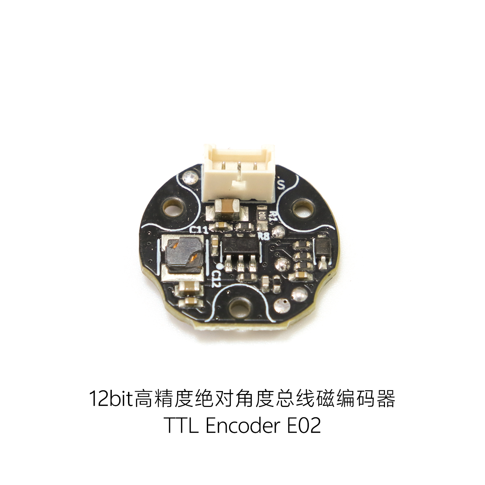
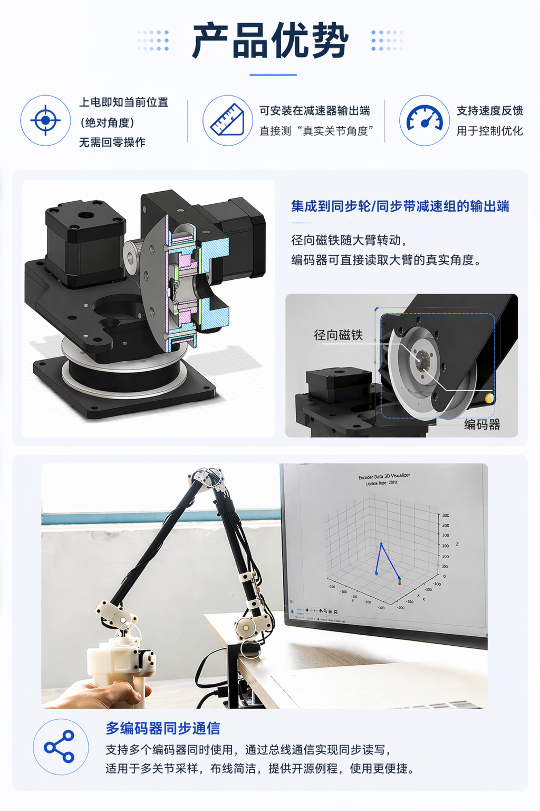
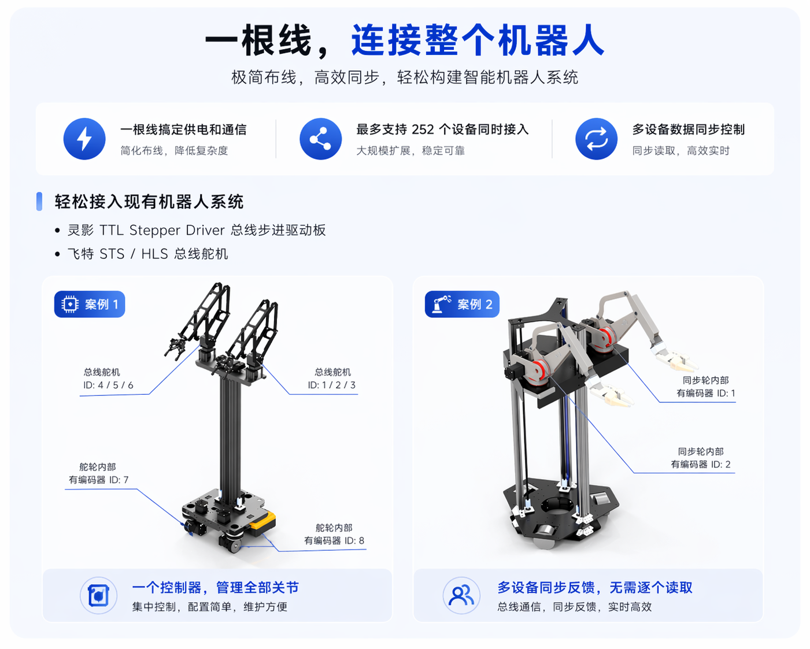
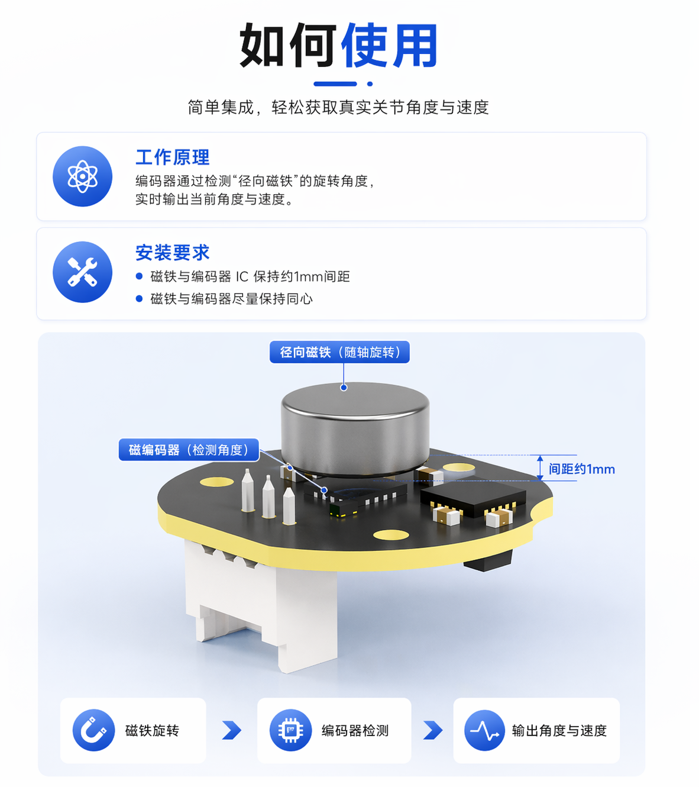

绝对角度反馈
断电后不丢失单圈绝对角度，上电即可获知当前位置，减少回零机构与初始化流程。
12bit absolute magnetic encoder
面向机器人关节与紧凑型传动结构的角度、速度反馈方案。断电不丢单圈绝对角度，无需每次回零；单线 TTL 总线可同时连接多个编码器、舵机与灵影总线设备。
Wiki 链接暂时保留，资料页更新后可直接替换链接地址。

核心优势
适合安装在减速器输出端、同步轮或齿轮内部，直接检测执行机构的实际输出角度，而不只依赖电机端估算。
断电后不丢失单圈绝对角度，上电即可获知当前位置，减少回零机构与初始化流程。
同时反馈位置和速度，支持多个设备同步读取，适合多关节机器人集中采样。
供电与通信布线简洁，ID 范围 1-252，可与灵影设备及飞特 STS、SMS、HLS 总线舵机混合使用。
支持 DC 5-28V 输入，典型功耗低于 10mA，便于接入不同电压等级的机器人系统。
当前位置可设置为指定位置值，校准结果掉电保存，方便机械装配后的零位或基准位标定。
板体直径约 16mm，HC-1.25-3P 接口，适合机械臂、灵巧手和小型传动机构内部空间。
应用场景


单线总线系统
通过 TTL Adapter (A)、HC-1.25 8P Hub (A) 或带单线 TTL 接口的机器人控制板，可以把多个 E02 编码器接入同一总线。每台设备设置独立 ID 后，即可集中读取关节角度和速度。
技术参数
| 产品类型 | 绝对角度磁编码器 |
|---|---|
| 通信方式 | 单线 TTL 总线 |
| 默认波特率 | 1 Mbps |
| 默认 ID / ID 范围 | 1 / 1-252 |
| 供电电压 | DC 5-28V |
| 工作电流 | <10mA |
| 角度分辨率 | 最高 12bit，单圈 0-4095 |
| 多圈位置范围 | 0-65534；最高精度下约 16 圈，圈数掉电不保存 |
| 速度反馈单位 | 步/秒 |
| 接口 | HC-1.25-3P |
| 引脚定义 | - / + / S，对应 GND / VCC / Signal |
| 板体直径 | 约 16mm |
| 基准校准 | 支持任意位置基准设置，校准结果掉电保存 |
安装说明
编码器通过检测径向磁铁的旋转角度输出位置与速度。安装时建议磁铁与编码器 IC 上表面保持约 1mm 间距，最大不建议超过 1.5mm，并尽量保证旋转轴线同心。

资料与教程
Wiki 页面将集中提供最新教程、软件、模型和下载链接。